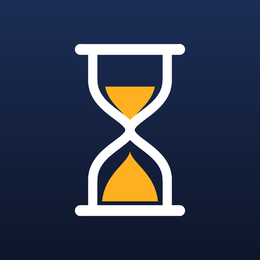

Giới hạn giờ xem (Watch Time Limit)
Chính sách này áp dụng cho ứng dụng Android Giới hạn giờ xem (Watch Time Limit), mã gói com.manh.tvlimit, trên TV, máy tính bảng và điện thoại. Trước bản 3.0, ứng dụng chỉ dành cho TV và có tên tiếng Anh TV Time Limit; chính sách dưới đây áp dụng cho mọi phiên bản.
Dữ liệu ứng dụng xử lý
Mọi dữ liệu dưới đây chỉ nằm trong bộ nhớ của thiết bị (TV, máy tính bảng hoặc điện thoại) và bị xóa khi gỡ ứng dụng:
- Số phút giới hạn mỗi ngày và khung giờ được xem bạn đặt cho từng ứng dụng, và số phút đã xem trong ngày.
- Mã PIN và mã khôi phục, chỉ lưu dưới dạng băm có salt (PBKDF2), không lưu bản gốc; số lần nhập sai liên tiếp, để khóa việc nhập sau 5 lần sai.
- Ngôn ngữ bạn chọn.
Dịch vụ Trợ năng (AccessibilityService)
Ứng dụng dùng API Trợ năng chỉ để biết ứng dụng nào đang mở trên màn hình, nhằm đếm giờ xem và hiện màn hình khóa khi hết số phút hoặc ngoài khung giờ phụ huynh đặt. Đây là tính năng kiểm soát của phụ huynh, chỉ chạy khi người dùng tự bật sau khi đọc thông báo trong ứng dụng và bấm Đồng ý. Dịch vụ không đọc nội dung màn hình, không đọc chữ nhập vào, không chặn thao tác chạm hay phím bấm và không gửi thông tin đi đâu. Nếu thiết bị không cho hiện màn hình khóa, dịch vụ chỉ đưa về màn hình chính.
Các quyền khác
- Truy cập dữ liệu sử dụng (không bắt buộc, người dùng tự cấp): chỉ để biết ứng dụng nào đang hiện trên màn hình: lúc dịch vụ khởi động lại, và trên máy tính bảng, điện thoại khi hai ứng dụng chia đôi màn hình, để tính giờ cho cả hai. Dữ liệu không rời khỏi thiết bị.
- Hiển thị trên ứng dụng khác: chỉ dùng trên TV Xiaomi MiTV-MZTU0, để phát một đoạn hình đen 2 giây giúp giao diện không bị giật sau khi xem Live TV hoặc HDMI. Thông báo "còn n phút" do dịch vụ Trợ năng hiển thị, không cần quyền này.
Trẻ em
Ứng dụng dành cho phụ huynh, giúp quản lý thời gian trẻ dùng TV, máy tính bảng và điện thoại. Ứng dụng không thu thập dữ liệu của trẻ hay của bất kỳ ai.
Liên hệ và thay đổi
Mọi câu hỏi xin gửi về vanmanhvcu@gmail.com. Nếu chính sách thay đổi, trang này sẽ được cập nhật kèm ngày sửa.
This policy covers the Android app Watch Time Limit (Giới hạn giờ xem), package com.manh.tvlimit, on TVs, tablets and phones. Before version 3.0 the app was for TVs only and its English name was TV Time Limit; this policy applies to every version.
Data the app handles
Everything below stays on the device (TV, tablet or phone) and is deleted when the app is uninstalled:
- The daily minutes and watching hours you set for each app, and the minutes watched today.
- The PIN and the recovery code, stored only as salted PBKDF2 hashes, never in plain form; the number of wrong tries in a row, to lock entry after 5 of them.
- The language you choose.
Accessibility service
The app uses the Accessibility API only to know which app is on screen, so it can count viewing time and show a lock screen when the minutes a parent set run out or outside the watching hours the parent set. This parental-control feature runs only after the user turns it on, following an in-app disclosure and tapping Agree. The service does not read screen content or typed text, does not block touches or keys and sends nothing anywhere. If the device does not let the lock screen appear, the service only goes back to the Home screen.
Other permissions
- Usage access (optional, granted by the user): only to know which apps are on screen: when the service restarts, and on tablets and phones when two apps share a split screen, so that both are counted. The data never leaves the device.
- Display over other apps: only on the Xiaomi MiTV-MZTU0, for a 2-second black clip that keeps its interface smooth after Live TV or HDMI. The "minutes left" banner is drawn by the Accessibility service and does not need it.
Children
The app is meant for parents managing their children's time on TVs, tablets and phones. It collects no data from children or anyone else.
Contact and changes
Questions: vanmanhvcu@gmail.com. If this policy changes, this page will be updated with the new date.